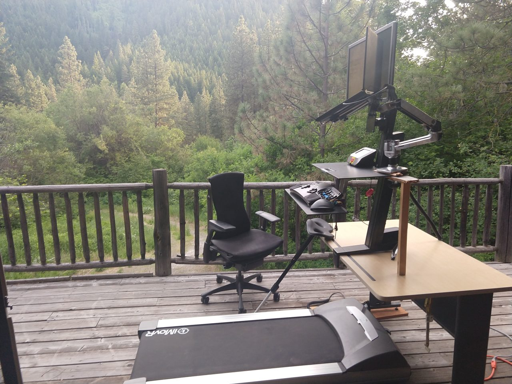
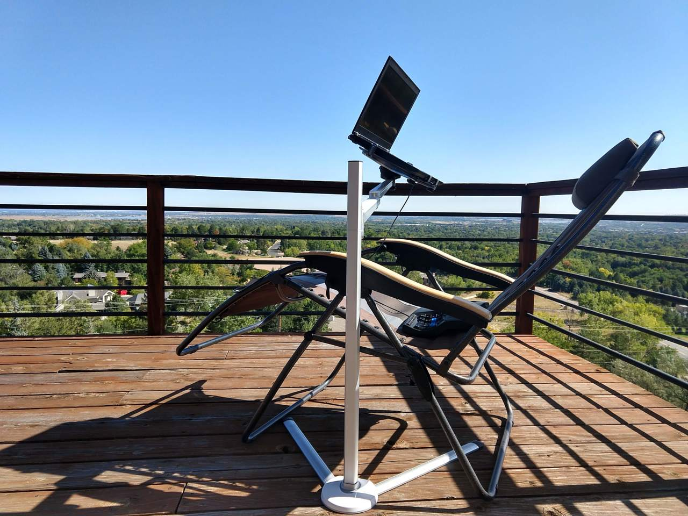
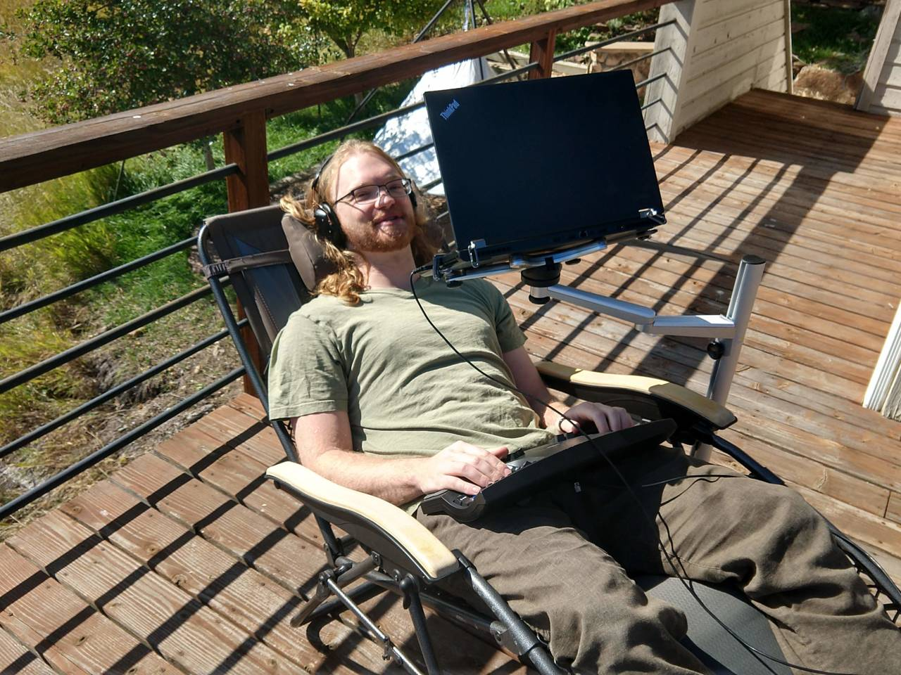
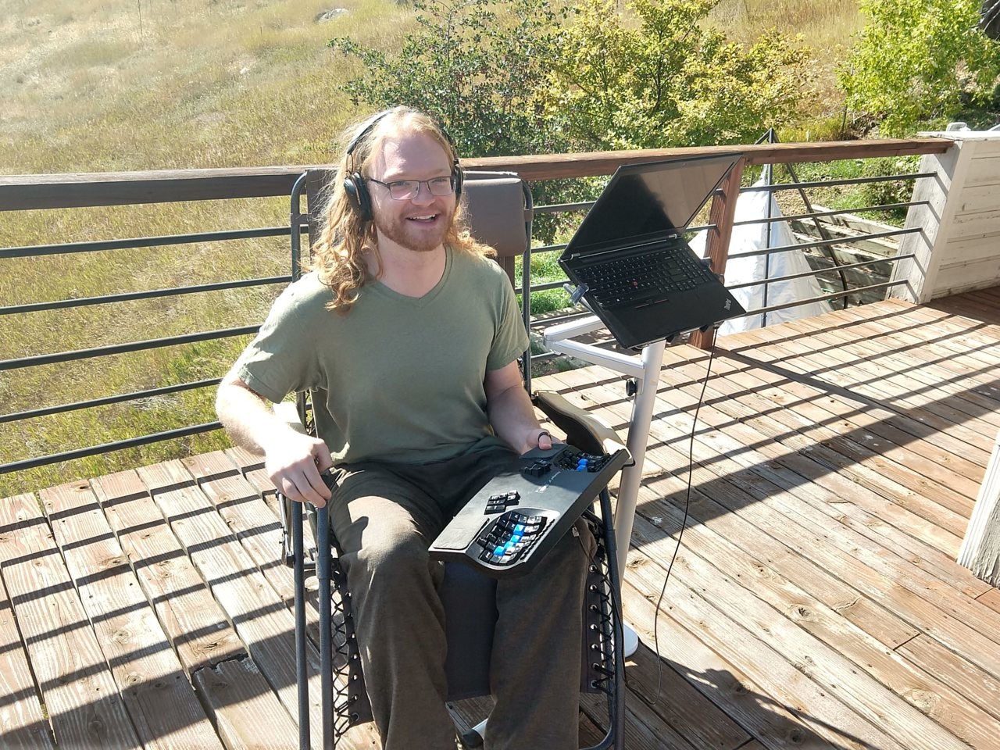
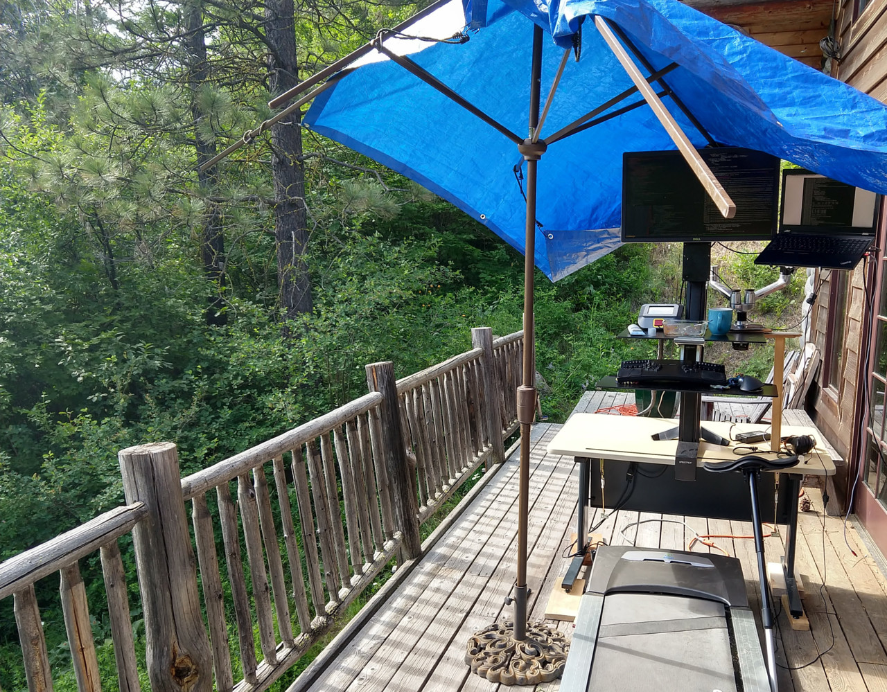
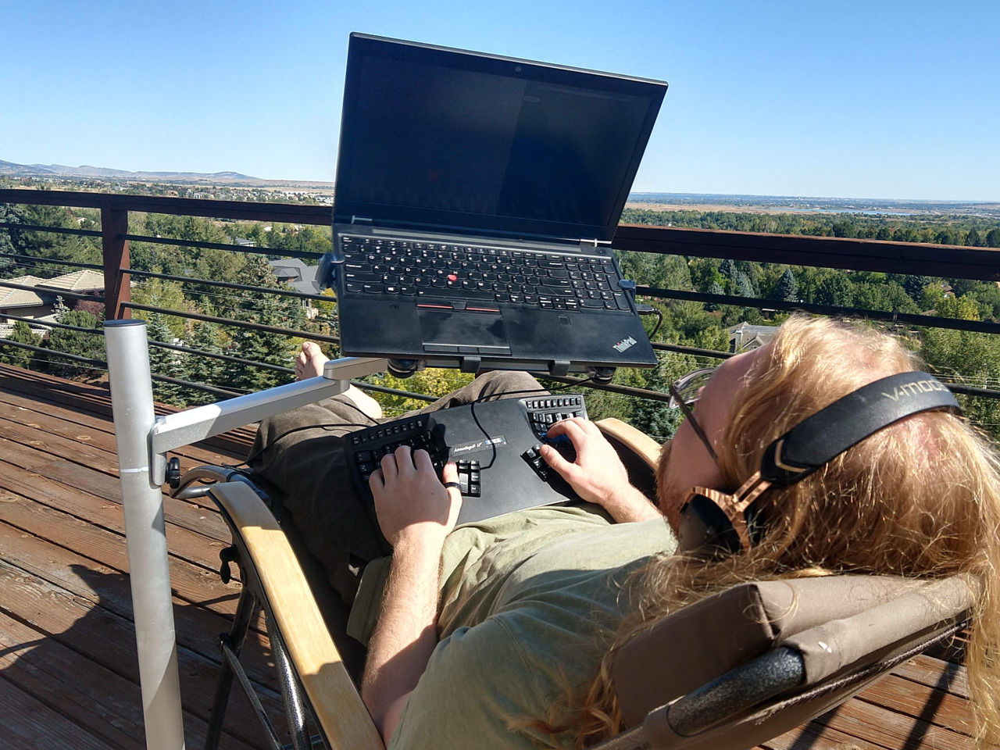
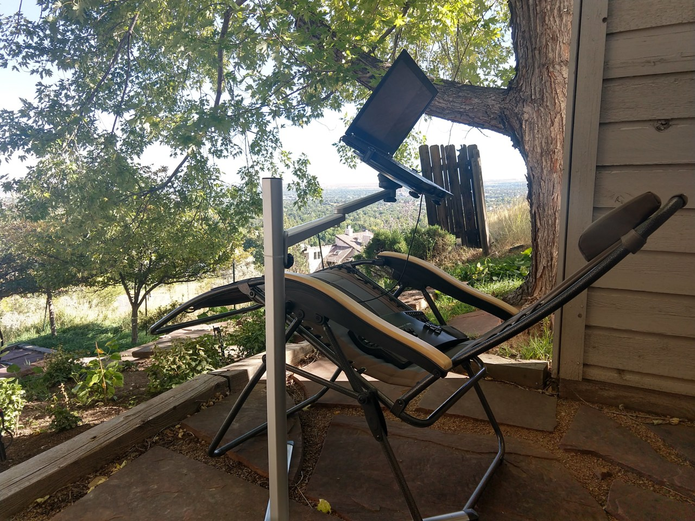
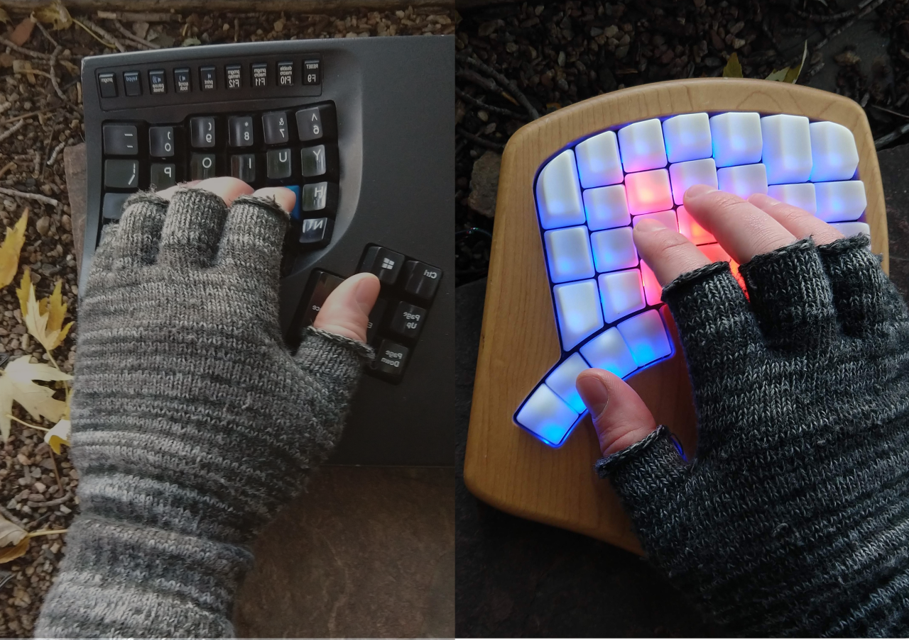

Outdoor Computing
with a Deck Desk
In the last couple years, I've been experimenting with some approaches for outdoor computer use. For way too long, I'd felt compelled to stay indoors to use the computer for any substantial chunk of time. Happily, I've found some ways to use my computer outside which work quite well for me, and I hope they might work well for you too!
One way to work outside is to simply take your laptop outside. However, I find that for me working with a laptop on my lap is not sustainable for much more than an hour or two, and even then, it just doesn't feel very comfortable. The laptop's screen is adjacent to the keyboard, which means typically neither are positioned ergonomically1. See the illustration at the beginning of my post about comfortable airplane computing
Deck Desk
If you have a desk that you can work at comfortably, one straightforward solution is to just move it outside! Here's what things looked like when I first moved my desk outside, in 2018:

While I'm tempted to delve into my motivations for using a leaning stool$, sit-stand workstation$, and walking treadmill$, the focus here is on computing outside, and so will leave those details for a future post. There is no need to have such equipment – you can just move your desk outside or establish an auxiliary desk outside.
Some of the sections below discuss how to overcome some of the challenges of using the computer outside. Much of it is obvious, but it seems good to enumerate them, as these same challenges might dissuade people from trying outdoor computing.
Reclined Computing
More recently, I have been experimenting with a more minimal deck setup, using relatively inexpensive equipment:

A photo of usage:

I've found these things to work well for this:
A keyboard that can be comfortably used in the lap2. I use a Kinesis Advantage 2$ for most of my typing needs, it's by far my favorite keyboard (though I do have a soft spot for the keyboard.io Model 01). I suspect that because your hands are fairly spread when using it, that it allows more comfortable postures. Due to this, I can comfortably type on the keyboard in my lap, with straight wrists and my upper arms at my sides.
- Update: The long term viability of this posture probably entirely relies on using a split keyboard or a keyboard with wide hand separation like the Kinesis. Using standard form factor keyboards with postures like this may easily involve wrist angles that lead to pain3.
A "zero gravity" patio chair which can lock at particular angles. This allows you to set your level of recline, and overall get quite comfortable. I'm quite happy with my Timber Ridge Zero Gravity Chair$, but I haven't really specifically compared it with others. While I like the wood armrests, they do have a downside, which is that I feel like I ought to stow it when rain is likely, in order to avoid damaging the wood.
A freestanding laptop stand. Specifically I'm using a Magichold stand$, which I'm quite happy with. I compared a fair number of options for such stands, and it looked like the most adaptable and appropriate one for my uses. Particularly, I was looking for portability, versatility, and for the ability to have the base off to the side.
One thing that's rather nice about the Magichold stand$, is that the "elbow" of the stand's arm can rotate 180°. This is rather nice for getting it out of the way when getting in and out of the chair:

Working with Sun: Constructed Shade
Sun can make it hard to read the screen, and it isn't great for our skin to linger too long.
A great solution for this is shade! If your desk's position is not naturally shaded, then various deck umbrellas should help. Since the materials were readily at hand, I ended up using bungee cords to attach a tarp to an umbrella stand:

This was highly adjustable and functional, though certainly not the most picturesque solution.
Working with Sun: Choosing Angles
Sometimes it can be quite nice to lounge in the sun, though. With a bit of experimentation with angles, usually a comfortable configuration can be found. If the sun isn't shining in your eyes, and only shining on the screen obliquely, then standard computer screens can be surprisingly readable.
In the picture above, my face is half in the sun, the chair has been rotated past the point where the glare is bothersome. By positioning things nearly perpendicular to the sun's azimuth, your eyes and screen only receive sunshine obliquely.
For improved readability, the can be turned such that it receives no direct sunshine:

The screen may look hard to read here, but that's just due to the camera adjusting to the overall brightness of the scene. Our eyes have much more dynamic range than phone cameras, so the screen in this photo was actually quite readable. I wouldn't recommend editing photos or video like this, but it's perfectly suitable for activities that don't require as much color accuracy, like programming, emailing, browsing, etc.
Working with Sun: Environmental Shade
For longer computing sessions, it's advisable to be in the shade. A great way to do this is to choose a spot that's already shaded – here's where the reclining setup usually lives:

The house and tree provide sufficient shade during most hours of the day!
Working with Rain
Knowing that it feels great to work outside is not always sufficient to motivate doing it. One way to make it the default is to move your desk outside!
Leaving it outside comes with a challenge, though, which is that inclement weather could damage the equipment. My solution to this was straightforward and effective – a couple tarps and bungee cords to hold them down.
I haven't yet computed outside during a proper downpour – maybe one day!
Working with Cold
This one is similarly pretty straightforward – if it's cold out, bundle up! There is one aspect of this that might not be immediately obvious, though: cold hands. It's uncomfortable, and sometimes even slow to type with cold hands. A decent solution is to use gloves that allow for dexterity, such as:
Fingerless gloves. These can be quite practical, as they keep your palm and the lower parts of your fingers warm, while freeing up your fingertips for dexterous manipulation. I like this pair$ of gloves for typing when it's cold out, but that's also the only pair of fingerless gloves I've ever tried. They work quite nicely, though the tips of my fingers do still get chilly in very cold weather.

Gloves that are thin enough to let you feel what you are doing. I don't have much experience with these yet:
There's a pair of gloves marketed for this called "The Writer's Glove"$. Some reviews indicate that they may not be so durable, though, so I haven't ordered them.
I've just tried on a pair of thin silk liners from Alaska Bear$ that have good reviews which specifically mention typing. They are decent gloves, I can indeed type with them. However, the feel isn't ideal because the seams overlap the fingertips, reducing the tactile sensitivity right in the spot where I want it4. So, for now I just use the fingerless gloves.
Working with Heat
It can get a bit tough to be productive on a super hot day. This was a bit of a challenge for me in the summer. I found one good approach was to use evaporative cooling5 – douse a t-shirt in water and then wear it!
I also experimented with a mist-based patio cooling system$ on the 2018 deck desk, and found that to be quite good for cooling the air, and generally refreshing.
Working without a Mouse
You might notice in the reclining pictures that I'm using an external keyboard but no mouse. This is because via software like vimium, xmonad, keynav, emacs, gmail's keyboard shortcuts, and my own todoist-shortcuts, I mostly just use the keyboard, reaching for the mouse infrequently6. I think this can improve the flow of familiar interactions with the computer, because they can be performed via direct muscle memory rather than involving eye-hand coordination.
I do have a recommendation if you want to try reclined computing with a mouse, though, which is to use a trackball mouse. I sometimes use a Logitech MX Ergo Trackball$, a rather nice wireless trackball with incredible battery life – it's only needed to be recharged few times in a couple years.
Thanks for reading!
Thanks for reading this post, I hope some of you are inspired to get outside! I realize the seasonal timing is not great for most of the northern hemisphere. If the weather is holding you back from giving this a shot, perhaps consider some sort of reminder to revisit in the spring?
If you do experiment with this stuff, I'd be curious to see what you come up with! My email address is this site's hostname at gmail.com
Also, I'm working on more posts exploring other approaches, which I hope to publish in the next few weeks. So if you're interested in this stuff, please check back in a while, or perhaps subscribe to my atom feed.
Footnotes
I am a hobbyist in ergonomics, I have no credentials related to ergonomics, nor have I studied much of the academic literature on the topic. Mostly, I've just followed my own intuition, sought what feels good, and avoided what causes pain. So please take my advice with a grain of salt, and perhaps experiment to see what works for you!↩︎
I suppose being able to type without looking at the keyboard is also required to make this practical. The keyboards I suggest all have columnar layouts, which I think are superior for accurate touch typing. This way most of your fingers don't have to move horizontally when typing letters, and there is no ambiguity about which finger to use to type a particular key.↩︎
There was a comment in the hacker news discussion for this post describing wrist pain with a similar reclining setup, but using a standard keyboard. It's always good to pay attention to any feelings of strain, particularly in wrists, and adjust to reduce it. The typical, quite decent advice is to keep your wrists straight – hands at the same angle as your forearms.↩︎
It seems like fingertip seams are common to most glove designs – some reviews of "The Writer's Glove"$ mention the same problem. If you find some nice thin gloves which don't have this problem, please let me know!↩︎
There are also various commercial products, particularly cooling vests which use evaporative effects, phase change cooling, or active cooling. I never ended up picking one – the t-shirt method and misting system was more than sufficient for the hot days.↩︎
If you're curious about primarily using a keyboard on Linux, my configuration files for xmonad and keynav can be found on github. My emacs configuration is also on github, though I don't recommend using it directly. Instead it's probably best to use other folks' configurations as sources for inspiration and building up your own config via incremental copy+modify.↩︎
Some links are amazon affiliate links, which sometimes send me a bit of money when you make purchases after clicking them. The purpose of this blog is sharing information and ideas, not making money. But I figure I may as well add them, and I appreciate usage of them!